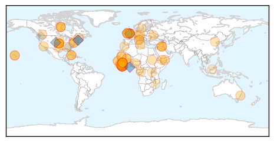

30 Day Trends
Web: 0 alerts, 0 warnings
Twitter: 0 alerts, 0 warnings
Top Articles:
- 1.000
- Royal Glamorgan Hospital patient tests negative for Ebola
- 1.000
- Over 800 Health Care Workers Infected with Ebola so Far
- 1.000
- 'Ebola volunteers should be praised not stigmatised'
- 1.000
- A Tragedy to Be Addressed in Recovery Plans>
- 0.999
- Trials of untested Ebola drugs begin in West Africa
- 0.999
- Ebola reach expands in Guinea; WHO vaccine experts to meet
- 0.999
- DOH: Honolulu patient does not meet criteria for Ebola testing
- 0.998
- Wales Ebola scare: Patient tests negative for killer virus at Royal Glamorgan Hospital
- 0.998
- Australian team sent to Africa to tackle Ebola
- 0.998
- Prince George assistant professors tests negative for Ebola
- 0.997
- Pope Congratulates Italian Health Minister for Ebola Patient Cure
- 0.997
- Patient tested negative for Ebola in South Wales is named locally as dad-of-two Stephen Powell
- 0.997
- Governments, Competitors Cooperate to Produce Ebola Vaccine
- 0.997
- Clinical trials of untested Ebola drugs under way in West Africa
- 0.997
- Otago Daily Times Online News : Otago, South Island, New Zealand & International News
- 0.997
- Ebola volunteers should be praised, not stigmatised
- 0.997
- On first visit to hard-hit nations, new UNMEER chief vows scaled-up support to end crisis
- 0.997
- Sierra Leone: Ebola Emergency Weekly Situation Report No. 11, 29 December 2014 – 4 January 2015 - Sierra Leone
- 0.996
- Britain says has strengthened Ebola screening after first case
- 0.995
- Kuwait- Health ministry implements strict Ebola prevention prog. - Al-Obaidi
- 0.995
- UK researchers launch human trial of third Ebola vaccine
- 0.995
- Ebola drug trial starts in Liberia - News
- 0.994
- UK and USA Sierra Leonean diaspora cooperate to airlift US$85,000 medical supplies for emergency Ebola response effort
- 0.989
- Vatican adds funds to Ebola fight
- 0.988
- NEW UNMEER CHIEF ARRIVES IN LIBERIA TO ASSESS EBOLA RESPONSE
- 0.985
- Is Ebola Becoming The New Go-To Conspiracy? It Is For North Korea
- 0.983
- Suspected Ebola case in Wales: Patient negative after tests at Royal Glamorgan Hospital
- 0.980
- Ebola, socialism & imperialism
- 0.980
- Recruited by Patriots as free agent, Steve Smith happy he signed with Ravens
- 0.980
- Yemen car bomb attack kills more than 50 at police academy
- 0.973
- North Carolina Doctor In Voluntary Quarantine After Returning From Liberian Aid Mission
- 0.972
- New UN Ebola Mission Chief Vows Scaled-up Support To End Crisis
- 0.969
- New App Launched for Ebola Survivors in West Africa, Articles
- 0.969
- Australian-funded Ebola clinic treats first patient
- 0.966
- AU: Ebola challenge will promote unity in west Africa
- 0.966
- The precfect story for the British Media.
- 0.965
- After Ebola: Preparing for the next catastrophic pandemic
- 0.965
- Ebola fight has coordination problem, says new UN mission chief
- 0.965
- Ebola fight has coordination problem, says new UN mission chief
- 0.960
- B.C. nurse Patrice Gordon 'never honestly felt' like she had Ebola
- 0.957
- New UN Ebola chief pays first visit to Liberia
- 0.954
- Grecourt Gate Announcement
- 0.954
- UN Warns Against Complacency in War Against Ebola
- 0.951
- Gambia: Is U.S. 'Endorsing 'Tyranny'? Gambians Arrest Mirrors Liberia
- 0.951
- Face of Defense: Soldier Goes Extra Mile in Liberia
- 0.951
- Training of Syrian rebels to begin this spring: Pentagon
- 0.951
- Liberia to reopen schools on Feb 2
- 0.951
- Ebola-Hit Countries in West Africa to Reopen Schools: UN Mission
- 0.951
- 'We Survive by Living... Deliberately!' Meet Yemeni Female Blogger: Afrah Nasser
- 0.951
- China Pledges $33 Million to Improve South Sudan Health Care
Showing top 50 articles...
Top Tweets:
- 0.939
- From today's Ebola update: 59% of healthcare cases have been fatal. Big range: 48% in Sierra Leone 58% in Guinea & 75% in Liberia.
- 0.919
- Ebola Update: 20656 confirmed probable & suspected cases reported in the 3 most affected countries with 8153 deaths. EbolaResponse
- 0.917
- The fight against Ebola far from over. As of next wk CDC will have 200 public health professionals fighting the outbreak in W Africa.
- 0.915
- How did being one of a number of people who discovered Ebola get shortened to "Peter Piot discovered Ebola"? whatabouttheothers
- 0.889
- RT: How did being one of a number of people who discovered Ebola get shortened to "Peter Piot discovered Ebola"? whatabou…
- 0.868
- More than 90% of registered contacts associated w known cases of Ebola are being traced in Liberia Guinea and Sierra Leone. EbolaResponse
- 0.765
- RT: Sierra Leone MOH Ebola Update Jan 7: 24 New Conf. Cases & 16 Susp 5 New Conf. Deaths https://t.co/vzyGMXPpIW
- 0.760
- Battle against Ebola continues:"@HaertlG: 2nd high-level meeting on Ebola vaccines access & financing [& vax trials] at on 8th Jan"
- 0.710
- Because of Ebola vax rates have plummeted & 1M kids in W Africa at risk for measles which is often deadly. Working to get vax done.
- 0.707
- RT: Because of Ebola vax rates have plummeted & 1M kids in W Africa at risk for measles which is often deadly. Working to…
- 0.638
- Staggering: 495 healthcare workers have died in this Ebola outbreak. That is more than the previous largest outbreak ever. Such a loss.
- 0.623
- RT: The fight against Ebola far from over. As of next wk CDC will have 200 public health professionals fighting the outbrea…
Web/News Articles

Tweets

Article Locations
Article Confidences